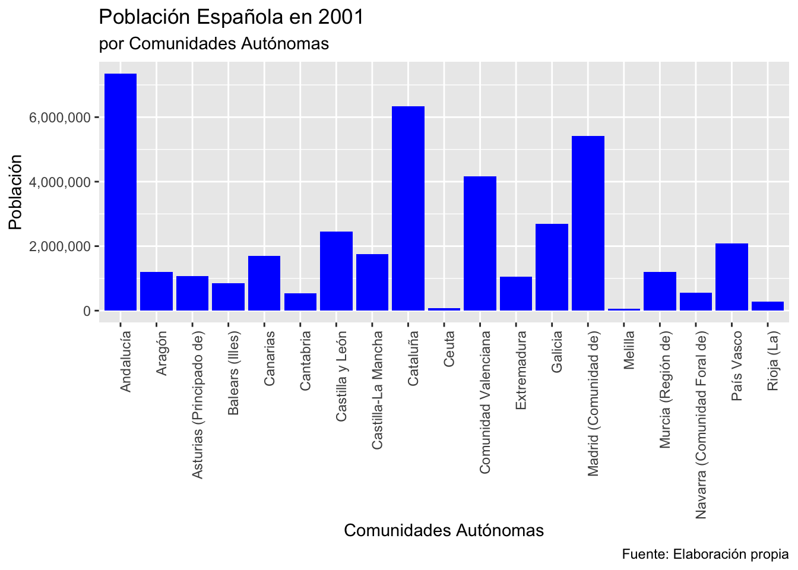
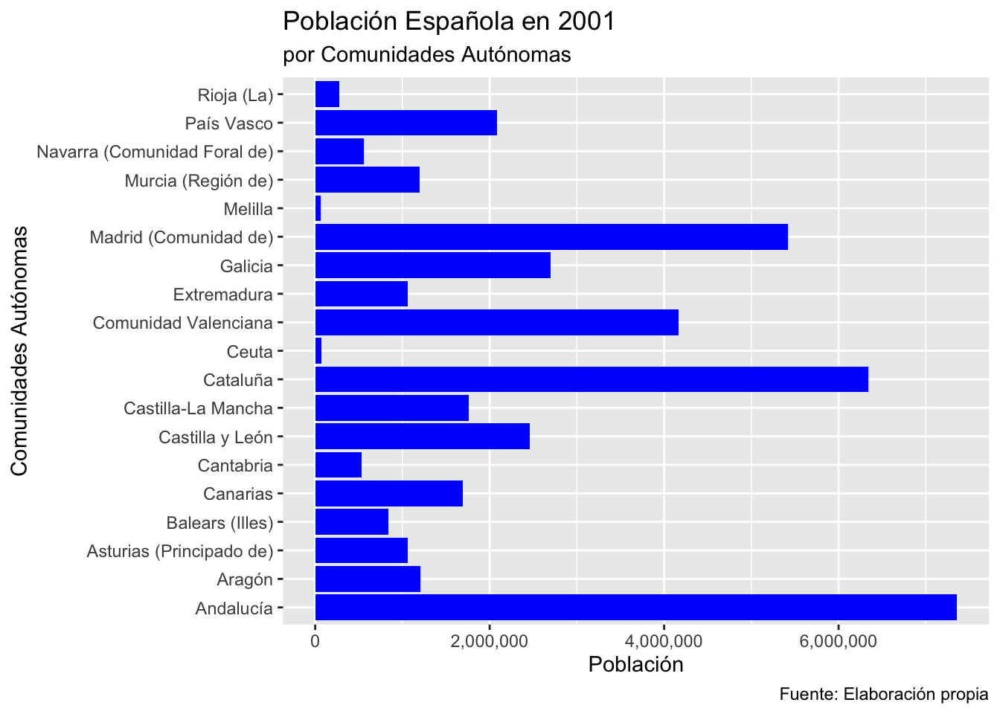
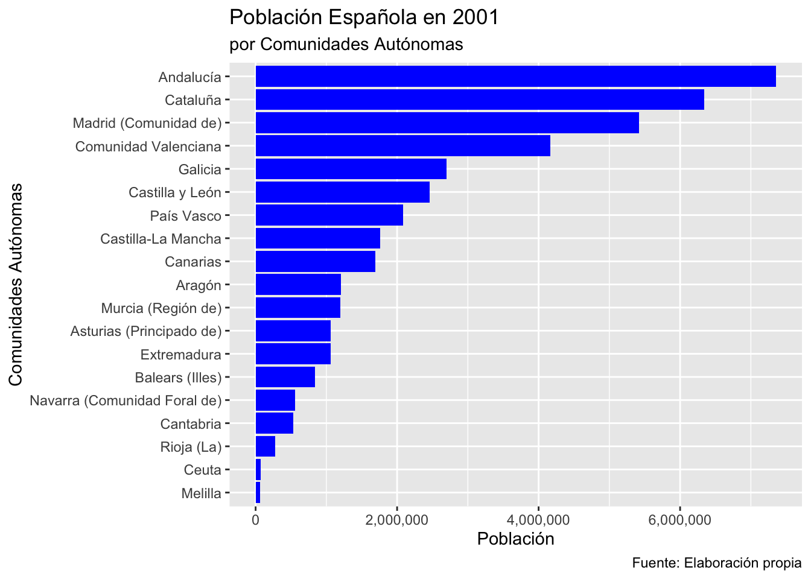
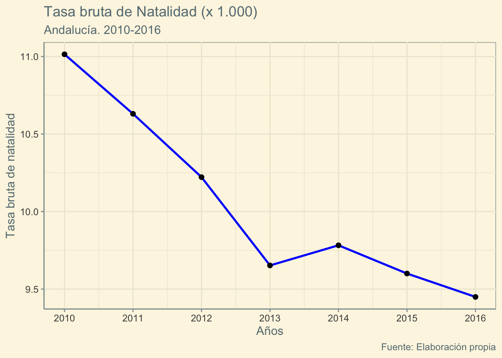
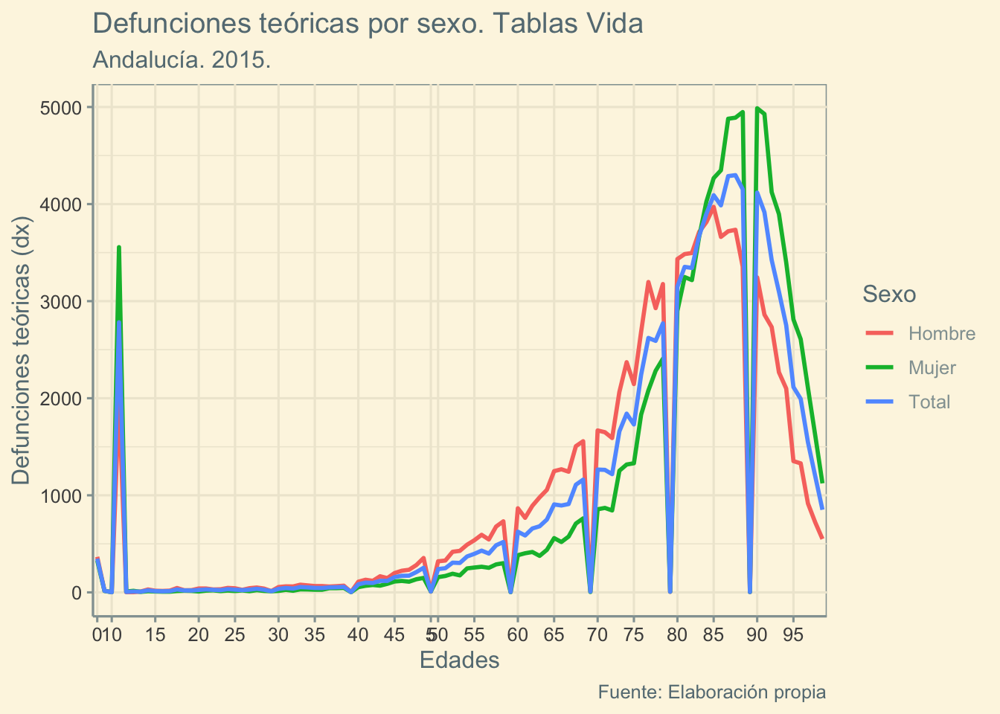

suppressWarnings(suppressMessages(library(DemographyBasic)))Práctica 4: Parte 1 (Gráficos ggplot2)
1 Crear gráficos con ggplot2
En este apartado haremos una introducción muy básica a las capacidades gráficas del paquete “ggplot2” que forma parte del sistema “tidyverse” y es posiblemente el paquete R de tratamiento gráfico más usado en la actualidad.
La idea que se usa en este paquete es añadir paso a paso las distintas capas que constituirán el gráfico final:
- Especificar los datos (tibble o data.frame).
- Indicar las columnas que se van a utilizar y el papel que desempeñarán en el gráfico (
aes()). - Añadir el tipo o tipos de gráficos que se van a representar.
- Especificar las características particulares del gráfico, en particular las leyendas o texto explicativo que llevará.
Veremos a través de ejemplos cómo se construyen gráficos con el paquete “ggplot2”, en concreto construiremos los siguientes tipos de gráficos:
- Diagramas de barras o columnas
- Diagramas de líneas
Se van a usar dos ficheros RData:
datos2_mej.RDataDatosINE_PLC.RData
load("datos2_mej.RData", verbose = TRUE)Loading objects:
datos2_mejload("DatosINE_PLC.RData", verbose = TRUE)Loading objects:
CCAA
Provincias
Provincias_de_CCAA
Poblacion_CCAA_Padron
Poblacion_CCAA_Padron_Hombres
Poblacion_CCAA_Padron_Mujeres
Poblacion_Provincias_Padron
Poblacion_Provincias_Padron_Hombres
Poblacion_Provincias_Padron_Mujeres
Poblacion_CCAA_Edades_Sexo_2017enero
Poblacion_CCAA_Edades_Sexo_2017julio
Poblacion_CCAA_Edades_Sexo_2016enero
Poblacion_CCAA_Edades_Sexo_2016julio
Poblacion_CCAA_Edades_Sexo_2015enero
Poblacion_CCAA_Edades_Sexo_2015julio
Poblacion_CCAA_TAnd_Edades_Sexo_2010a2017
Poblacion_CCAA_Edades_Sexo_Proced_1998a2017
Poblacion_Provincias_Censos
Defunciones_CCAA_Edades_Sexo_2014
Defunciones_CCAA_Edades_Sexo_2015
Defunciones_CCAA_Edades_Sexo_2016
Defunciones_Provincias
Nacimientos_Provincias_ResidenciaMadres
Nacimientos_CCAA_EdadMadre_2010a2016
Fecundidad_CCAA_TAnd_EdadesGr_2010a2016
Matrimonios_CCAA_Esposoas_2010a2016
Matrimonios_CCAA_SegunSexoEsp_2010a2016
Divorcios_CCAA_Tipos_2013a2016
Divorcios_Provincias_Tipos_2013a20162 Diagrama de barras o columnas
Utilizaremos el dataset: datos2_mej contenidos en datos2_mej.RData.
DemBas_presentadf(head(datos2_mej))| Provincia | CCAA | TOTAL | Varon | Mujer |
|---|---|---|---|---|
| 01-Álava | País Vasco | 286387 | 142036 | 144351 |
| 02-Albacete | Castilla-La Mancha | 364835 | 181461 | 183374 |
| 03-Alicante/Alacant | Comunidad Valenciana | 1461925 | 722162 | 739763 |
| 04-Almería | Andalucía | 536731 | 272023 | 264708 |
| 33-Asturias | Asturias (Principado de) | 1062998 | 508995 | 554003 |
| 05-Ávila | Castilla y León | 163442 | 81850 | 81592 |
2.1 Ejemplo
En el siguiente código veremos como se construye un diagrama de columnas de la variable “Poblacion” de las comunidades autónomas (CCAA) para el censo del 2001.
En primer lugar, preparamos los datos que se van a necesitar con ayuda del sistema tidyverse:
datos_CCAA = datos2_mej %>%
dplyr::group_by(CCAA) %>%
dplyr::summarise(TOTALCCAA = sum(TOTAL),
TOTALVarón = sum(Varon),
TOTALMujer = sum(Mujer)) %>%
dplyr::arrange(desc(TOTALCCAA))
datos_CCAA %>%
#glimpse() # versión mejorada de la función str() en tidyverse
head(10) %>%
DemBas_presentadf()| CCAA | TOTALCCAA | TOTALVarón | TOTALMujer |
|---|---|---|---|
| Andalucía | 7357558 | 3622066 | 3735492 |
| Cataluña | 6343110 | 3106531 | 3236579 |
| Madrid (Comunidad de) | 5423384 | 2609746 | 2813638 |
| Comunidad Valenciana | 4162776 | 2046984 | 2115792 |
| Galicia | 2695880 | 1294378 | 1401502 |
| Castilla y León | 2456474 | 1209874 | 1246600 |
| País Vasco | 2082587 | 1017881 | 1064706 |
| Castilla-La Mancha | 1760516 | 875550 | 884966 |
| Canarias | 1694477 | 842966 | 851511 |
| Aragón | 1204215 | 594846 | 609369 |
Los pasos para la construcción con “ggplot2” del diagrama de barras son:
Usar la llamada a la función:
ggplot()- con los datos que utilizaremos (en el ejemplo:
datos_CCAA) - y la función
aes(), en la que se especifican quién irá al eje X e Y.
- con los datos que utilizaremos (en el ejemplo:
Sumamos o añadimos la geometría de representación o el tipo de gráfico. En este caso:
- `geom_col()``
- y especificamos algunas características. Para este tipo de gráfico el color de las barras a través de “
fill”.
Y por último, usamos la función:
labs(), en la que indicaremos las distintas leyendas del gráfico.
Podemos verlo en el siguiente código R:
#library(ggplot2)
ggplot(datos_CCAA,aes(x=CCAA,y=TOTALCCAA)) +
geom_col(fill="blue") +
labs(title="Población Española en 2001",
subtitle="por Comunidades Autónomas",
y="Población",x="Comunidades Autónomas",
caption="Fuente: Elaboración propia") +
scale_y_continuous(labels = scales::comma) +
theme(axis.text.x = element_text(angle = 90, hjust = 1)) 
Ejemplo. Si queremos hacer la misma representación pero intercambiando los ejes, añadiremos coord_flip().
En este gráfico además hemos modificado la forma de representar los números de las etiquetas del eje en el que aparecen las cifras de población.
ggplot(datos_CCAA,aes(x=CCAA,y=TOTALCCAA)) +
geom_col(fill="blue") +
labs(title="Población Española en 2001",
subtitle = "por Comunidades Autónomas",
y="Población",x="Comunidades Autónomas",
caption="Fuente: Elaboración propia") +
scale_y_continuous(labels = scales::comma) +
theme(axis.text.y = element_text(angle = 0, hjust = 1)) +
coord_flip()
2.1.1 Ordenar barras por orden descendente de valor
Ejemplo. Para presentar las columnas siguiendo algún tipo de orden (por defecto, las ordena según el orden alfabético) se puede utilizar la función reorder(). Cuando se llama a reorder() el primer argumento indica la columna que se usará para las etiquetas, y la segunda columna será para indicar el orden en el que aparecerán (si se quiere presentar en orden contrario se debe colocar un signo “-” delante del segundo argumento).
ggplot(datos_CCAA,aes(x=reorder(CCAA,TOTALCCAA),y=TOTALCCAA)) +
geom_col(fill="blue") +
labs(title="Población Española en 2001",
subtitle = "por Comunidades Autónomas",
y="Población",x="Comunidades Autónomas",
caption="Fuente: Elaboración propia") +
scale_y_continuous(labels = scales::comma) +
theme(axis.text.y = element_text(angle = 0, hjust = 1)) +
coord_flip()
Esta representación nos permite identificar rápidamente la ordenación de las comunidades autónomas según el número de habitantes.
2.2 Diagrama de líneas
2.2.1 Ejemplo 1
Veamos ahora como representar un diagrama de líneas. El procedimiento es prácticamente el mismo que el anterior, pero se cambiará la geometría o tipo de gráfico, que en este caso es: geom_line().
Vamos a construir un diagrama de líneas con el que representaremos la evolución de la tasa bruta de natalidad de 2010 a 2016.
Manipulamos los datos que vamos a necesitar:
# library(dplyr) # ya cargado con library(tidyverse)
Nac_And = Nacimientos_CCAA_EdadMadre_2010a2016 %>%
filter(Edades=="Todas las edades",CCAA=="Andalucía") %>%
select(Nacimientos)
Pob_And_ASexos = Poblacion_CCAA_TAnd_Edades_Sexo_2010a2017 %>%
filter(Sexo=="AmbosSexos",Codigo=="01",Edades=="TOTAL EDADES") %>%
select(`2016`,`2015`,`2014`,`2013`,`2012`,`2011`,`2010`) %>%
as.numeric()
TBN_2016a2010 = func_dem_TasaBruta_t(as.numeric(Nac_And[,1]),Pob_And_ASexos)
# func_dem_TasaBruta_t() definida en el fichero R: funciones_demografia.RNos quedamos con la información en el siguiente formato:
df.rep = data.frame(Año = 2016:2010,
TBN = TBN_2016a2010)
head(df.rep) |>
DemBas_presentadf()| Año | TBN |
|---|---|
| 2016 | 9.449450 |
| 2015 | 9.600260 |
| 2014 | 9.782435 |
| 2013 | 9.652501 |
| 2012 | 10.221912 |
| 2011 | 10.630451 |
El código para el gráfico se recoge a continuación:
#library(ggplot2) # ya cargado con library(tidyverse)
#library(ggthemes)
ggplot(df.rep, aes(x = Año, y=TBN)) +
geom_line(alpha = 1,linetype = "solid", colour="blue",linewidth = 1) +
geom_point(size = 2) +
labs(title="Tasa bruta de Natalidad (x 1.000) ",
subtitle = "Andalucía. 2010-2016",
y="Tasa bruta de natalidad",
x="Años",
caption="Fuente: Elaboración propia") +
#scale_y_continuous(labels = scales::comma,breaks = seq(0,3.5,by=0.25)) +
scale_x_continuous(breaks = seq(2010,2016,by=1)) +
theme(axis.text.y = element_text(angle = 0, hjust = 1)) +
theme_solarized()
En este gráfico también hemos sumado la geometría geom_point(), para añadir los puntos sobre el gráfico de líneas para resaltar sus valores.
2.2.2 Ejemplo 2
En este nuevo ejemplo, representaremos las defunciones teóricas (función \(dx\) de la tabla de vida) en Andalucía en 2015, para edades simples, distinguiendo según el sexo.
Los datos que se utilizarán por sexo son (para obtenerlos se han realizado previamente otras manipulaciones de los datos con el sistema tidyverse, ver Sección 2.2.3):
df.rep = data.frame(
Edades = c(tmortalidad2015_AndAmb$Edad,
tmortalidad2015_AndHom$Edad,
tmortalidad2015_AndMuj$Edad),
dx = c(tmortalidad2015_AndAmb$dx,
tmortalidad2015_AndHom$dx,
tmortalidad2015_AndMuj$dx),
Sexo = c(rep("Total",nrow(tmortalidad2015_AndAmb)),
rep("Hombre",nrow(tmortalidad2015_AndHom)),
rep("Mujer",nrow(tmortalidad2015_AndMuj)))
)
df.rep |>
slice(1:6,102:104,203:205) |>
DemBas_presentadf()| Edades | dx | Sexo |
|---|---|---|
| 0 | 347 | Total |
| 1 | 16 | Total |
| 2 | 19 | Total |
| 3 | 12 | Total |
| 4 | 3 | Total |
| 5 | 9 | Total |
| 0 | 366 | Hombre |
| 1 | 17 | Hombre |
| 2 | 23 | Hombre |
| 0 | 328 | Mujer |
| 1 | 15 | Mujer |
| 2 | 15 | Mujer |
En el argumento aes() se ha utilizado el papel “colour=Sexo”, para que se haga el diagrama de líneas con un color distinto para cada modalidad de la variable “Sexo”. El código para constuir el gráfico de líneas sería el siguiente:
ggplot(df.rep, aes(x = Edades, y=dx, group = Sexo, colour = Sexo)) +
geom_line(alpha = 1,
linetype = "solid",
linewidth = 1) +
labs(title="Defunciones teóricas por sexo. Tablas Vida",
subtitle = "Andalucía. 2015.",
y="Defunciones teóricas (dx)",
x="Edades",
caption="Fuente: Elaboración propia") +
#scale_y_continuous(labels = scales::comma,breaks = seq(0,1,by=0.1)) +
#scale_x_continuous(breaks = c(0,seq(5,100,by=5))) +
scale_x_discrete(breaks = c(0,seq(5,100,by=5))) +
theme(axis.text.y = element_text(angle = 0, hjust = 1)) +
theme_solarized() 
Se ha añadido la función “theme_solarized()” que permite cambiar el aspecto general del gráfico (el tema “solarized” fija un fondo amarillo y otras características). Existen otros muchos tipos de temas predefinidos (consultar la ayuda de “ggplot2” y del paquete “ggthemes”).
2.2.3 Código tidyverse utilizado para obtener los datos de este ejemplo
Nota: Aquí se ha utilizado un truco para mostrar código R escrito y ejecutado-utilizado previamente en el fichero Quarto, y mostrarlo en un punto posterior del fichero (como en un apéndice).
## Extraemos los datos necesarios de defunciones y poblaciones medias
## para obtener las tasas específicas de mortalidad para Andalucía
## para los años 2015 y 2016:
df_def01_15 = Defunciones_CCAA_Edades_Sexo_2015 %>%
filter(Codigo=="01") %>%
select(EdadesNum,`Ambos sexos`)
df_def01_15[101,2] = df_def01_15[101,2] + df_def01_15[102,2]
df_def01_15 = df_def01_15[-102,]
names(df_def01_15)[2] = "Defunciones"
df_pob01_T_15 = Poblacion_CCAA_Edades_Sexo_2015julio %>%
filter(CodigosCCAA=="01",Sexo=="AmbosSexos",!is.na(EdadesNum)) %>%
select(EdadesNum,Poblacion)
df_def01_16 = Defunciones_CCAA_Edades_Sexo_2016 %>%
filter(Codigo=="01") %>%
select(EdadesNum,`Ambos sexos`)
df_def01_16[101,2] = df_def01_16[101,2] + df_def01_16[102,2]
df_def01_16 = df_def01_16[-102,]
names(df_def01_16)[2] = "Defunciones"
df_pob01_T_16 = Poblacion_CCAA_Edades_Sexo_2016julio %>%
filter(CodigosCCAA=="01",Sexo=="AmbosSexos",!is.na(EdadesNum)) %>%
select(EdadesNum,Poblacion)
## tabla de mortalidad de edades simples para el **año 2015**:
mx_simples_15 = DemBas_mx(Px = df_pob01_T_15$Poblacion,
Dx = df_def01_15$Defunciones,
N0 = df_pob01_T_15$Poblacion[1],
D0 = df_def01_15$Defunciones[1])
tmortalidad2015_AndAmb = DemBas_tablavida_completa(mx_simples_15)
#func_salida_tablas(tmortalidad2015_AndAmb,salida)
## tabla de mortalidad de edades simples para el **año 2016**:
mx_simples_16 = DemBas_mx(Px = df_pob01_T_16$Poblacion,
Dx = df_def01_16$Defunciones,
N0 = df_pob01_T_16$Poblacion[1],
D0 = df_def01_16$Defunciones[1])
tmortalidad2016_AndAmb = DemBas_tablavida_completa(mx_simples_16)
## Tablas de mortalidad de Hombres en Andalucía para 2016
## Extraemos los datos necesarios de defunciones y poblaciones medias
## para obtener las tasas específicas de mortalidad para Andalucía
## para los años 2015 y 2016:
df_def01h_15 = Defunciones_CCAA_Edades_Sexo_2015 %>%
filter(Codigo=="01") %>%
select(EdadesNum,Hombres)
df_def01h_15[101,2] = df_def01h_15[101,2] + df_def01h_15[102,2]
df_def01h_15 = df_def01h_15[-102,]
names(df_def01h_15)[2] = "Defunciones"
df_pob01_T_15 = Poblacion_CCAA_Edades_Sexo_2015julio %>%
filter(CodigosCCAA=="01",Sexo=="Hombres",!is.na(EdadesNum)) %>%
select(EdadesNum,Poblacion)
df_def01h_16 = Defunciones_CCAA_Edades_Sexo_2016 %>%
filter(Codigo=="01") %>%
select(EdadesNum,Hombres)
df_def01h_16[101,2] = df_def01h_16[101,2] + df_def01h_16[102,2]
df_def01h_16 = df_def01h_16[-102,]
names(df_def01h_16)[2] = "Defunciones"
df_pob01_T_16 = Poblacion_CCAA_Edades_Sexo_2016julio %>%
filter(CodigosCCAA=="01",Sexo=="Hombres",!is.na(EdadesNum)) %>%
select(EdadesNum,Poblacion)
## tabla de mortalidad de edades simples para el **año 2015**:
mx_simples_15 = DemBas_mx(Px = df_pob01_T_15$Poblacion,
Dx = df_def01h_15$Defunciones,
N0 = df_pob01_T_15$Poblacion[1],
D0 = df_def01h_15$Defunciones[1])
tmortalidad2015_AndHom = DemBas_tablavida_completa(mx_simples_15)
## tabla de mortalidad de edades simples para el **año 2016**:
mx_simples_16 = DemBas_mx(Px = df_pob01_T_16$Poblacion,
Dx = df_def01h_16$Defunciones,
N0 = df_pob01_T_16$Poblacion[1],
D0 = df_def01h_16$Defunciones[1])
tmortalidad2016_AndHom = DemBas_tablavida_completa(mx_simples_16)
## Tablas de mortalidad de Mujeres en Andalucía para 2016
## Extraemos los datos necesarios de defunciones y poblaciones medias para
## obtener las tasas específicas de mortalidad para España:
df_def01m_15 = Defunciones_CCAA_Edades_Sexo_2015 %>%
filter(Codigo=="01") %>%
select(EdadesNum,Mujeres)
df_def01m_15[101,2] = df_def01m_15[101,2] + df_def01m_15[102,2]
df_def01m_15 = df_def01m_15[-102,]
names(df_def01m_15)[2] = "Defunciones"
df_pob01_T_15 = Poblacion_CCAA_Edades_Sexo_2015julio %>%
filter(CodigosCCAA=="01",Sexo=="Mujeres",!is.na(EdadesNum)) %>%
select(EdadesNum,Poblacion)
df_def01m_16 = Defunciones_CCAA_Edades_Sexo_2016 %>%
filter(Codigo=="01") %>%
select(EdadesNum,Mujeres)
df_def01m_16[101,2] = df_def01m_16[101,2] + df_def01m_16[102,2]
df_def01m_16 = df_def01m_16[-102,]
names(df_def01m_16)[2] = "Defunciones"
df_pob01_T_16 = Poblacion_CCAA_Edades_Sexo_2016julio %>%
filter(CodigosCCAA=="01",Sexo=="Mujeres",!is.na(EdadesNum)) %>%
select(EdadesNum,Poblacion)
## tabla de mortalidad de edades simples para el **año 2015**:
mx_simples_15 = DemBas_mx(Px = df_pob01_T_15$Poblacion,
Dx = df_def01m_15$Defunciones,
N0 = df_pob01_T_15$Poblacion[1],
D0 = df_def01m_15$Defunciones[1])
tmortalidad2015_AndMuj = DemBas_tablavida_completa(mx_simples_15)
#func_salida_tablas(tmortalidad2015_AndMuj,salida)
#- tabla de mortalidad de edades simples para el **año 2016**:
mx_simples_16 = DemBas_mx(Px = df_pob01_T_16$Poblacion,
Dx = df_def01m_16$Defunciones,
N0 = df_pob01_T_16$Poblacion[1],
D0 = df_def01m_16$Defunciones[1])
tmortalidad2016_AndMuj = DemBas_tablavida_completa(mx_simples_16)